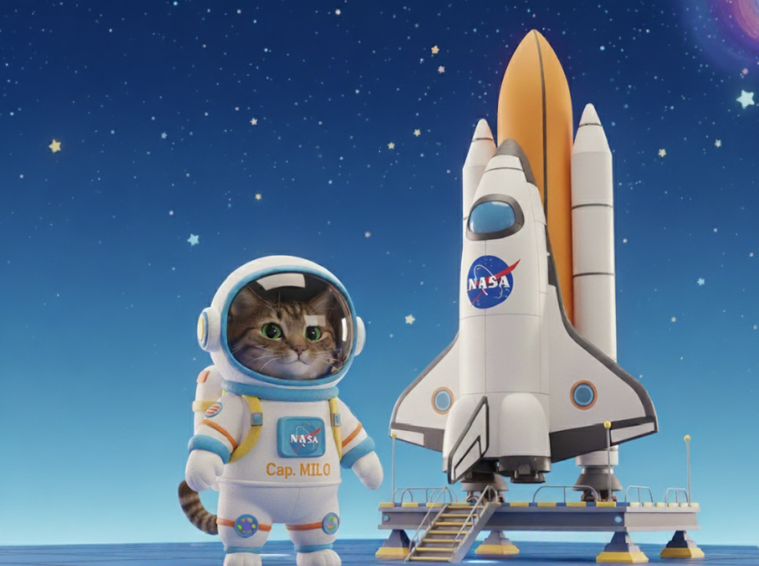

🚀 La Aventura Espacial del Capitán Milo

En un rincón del universo, vivía el pequeño Capitán Milo, un gatito astronauta curioso que soñaba con encontrar un planeta lleno de vida.
Página 1 de 14
En un rincón del universo, vivía el pequeño Capitán Milo, un gatito astronauta curioso que soñaba con encontrar un planeta lleno de vida.